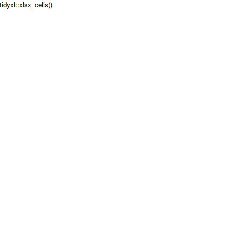

tidyxl imports non-tabular data from Excel files into R. It exposes cell content, position, formatting and comments in a tidy structure for further manipulation, especially by the unpivotr package. It supports the xml-based file formats ‘.xlsx’ and ‘.xlsm’ via the embedded RapidXML C++ library. It does not support the binary file formats ‘.xlsb’ or ‘.xls’.
It also provides a function xlex() for tokenizing formulas. See the vignette for details. It is useful for detecting ‘spreadsheet smells’ (poor practice such as embedding constants in formulas, or using deep levels of nesting), and for understanding the dependency structures within spreadsheets.
Make cells tidy
Tidyxl represents each cell as one row in a dataframe. Like this.

What can you do with tidy cells? The best places to start are:
- Spreadsheet Munging Strategies, a free, online cookbook using tidyxl and unpivotr
- Screencasts on YouTube.
- Worked examples on GitHub.
Otherwise see examples below.
Breaking changes
The version 1.0.0 release has some breaking changes. See NEWS.md for details. The previous version can be installed as follows.
devtools::install_version("tidyxl", version = "0.2.3", repos = "http://cran.us.r-project.org")Examples
The package includes a spreadsheet, ‘titanic.xlsx’, which contains the following pivot table:
ftable(Titanic, row.vars = 1:2)
#> Age Child Adult
#> Survived No Yes No Yes
#> Class Sex
#> 1st Male 0 5 118 57
#> Female 0 1 4 140
#> 2nd Male 0 11 154 14
#> Female 0 13 13 80
#> 3rd Male 35 13 387 75
#> Female 17 14 89 76
#> Crew Male 0 0 670 192
#> Female 0 0 3 20The multi-row column headers make this difficult to import. A popular package for importing spreadsheets coerces the pivot table into a dataframe. It treats the second header row as though it were observations.
titanic <- system.file("extdata/titanic.xlsx", package = "tidyxl")
readxl::read_excel(titanic)
#> New names:
#> • `` -> `...1`
#> • `` -> `...2`
#> • `` -> `...5`
#> • `` -> `...7`
#> # A tibble: 10 × 7
#> ...1 ...2 Age Child ...5 Adult ...7
#> <chr> <chr> <chr> <chr> <chr> <chr> <chr>
#> 1 <NA> <NA> Survived No Yes No Yes
#> 2 Class Sex <NA> <NA> <NA> <NA> <NA>
#> 3 1st Male <NA> 0 5 118 57
#> 4 <NA> Female <NA> 0 1 4 140
#> 5 2nd Male <NA> 0 11 154 14
#> 6 <NA> Female <NA> 0 13 13 80
#> 7 3rd Male <NA> 35 13 387 75
#> 8 <NA> Female <NA> 17 14 89 76
#> 9 Crew Male <NA> 0 0 670 192
#> 10 <NA> Female <NA> 0 0 3 20tidyxl doesn’t coerce the pivot table into a data frame. Instead, it represents each cell in its own row, where it describes the cell’s address, value and other properties.
library(tidyxl)
x <- xlsx_cells(titanic)
dplyr::glimpse(x)
#> Rows: 60
#> Columns: 24
#> $ sheet <chr> "Sheet1", "Sheet1", "Sheet1", "Sheet1", "Sheet1", …
#> $ address <chr> "C1", "D1", "E1", "F1", "G1", "C2", "D2", "E2", "F…
#> $ row <int> 1, 1, 1, 1, 1, 2, 2, 2, 2, 2, 3, 3, 4, 4, 4, 4, 4,…
#> $ col <int> 3, 4, 5, 6, 7, 3, 4, 5, 6, 7, 1, 2, 1, 2, 4, 5, 6,…
#> $ is_blank <lgl> FALSE, FALSE, TRUE, FALSE, TRUE, FALSE, FALSE, FAL…
#> $ content <chr> "0", "1", NA, "2", NA, "3", "4", "5", "4", "5", "6…
#> $ data_type <chr> "character", "character", "blank", "character", "b…
#> $ error <chr> NA, NA, NA, NA, NA, NA, NA, NA, NA, NA, NA, NA, NA…
#> $ logical <lgl> NA, NA, NA, NA, NA, NA, NA, NA, NA, NA, NA, NA, NA…
#> $ numeric <dbl> NA, NA, NA, NA, NA, NA, NA, NA, NA, NA, NA, NA, NA…
#> $ date <dttm> NA, NA, NA, NA, NA, NA, NA, NA, NA, NA, NA, NA, N…
#> $ character <chr> "Age", "Child", NA, "Adult", NA, "Survived", "No",…
#> $ character_formatted <list> [<tbl_df[1 x 14]>], [<tbl_df[1 x 14]>], <NULL>, […
#> $ formula <chr> NA, NA, NA, NA, NA, NA, NA, NA, NA, NA, NA, NA, NA…
#> $ is_array <lgl> FALSE, FALSE, FALSE, FALSE, FALSE, FALSE, FALSE, F…
#> $ formula_ref <chr> NA, NA, NA, NA, NA, NA, NA, NA, NA, NA, NA, NA, NA…
#> $ formula_group <int> NA, NA, NA, NA, NA, NA, NA, NA, NA, NA, NA, NA, NA…
#> $ comment <chr> NA, NA, NA, NA, NA, NA, NA, NA, NA, NA, NA, NA, NA…
#> $ height <dbl> 15, 15, 15, 15, 15, 15, 15, 15, 15, 15, 15, 15, 15…
#> $ width <dbl> 8.38, 8.38, 8.38, 8.38, 8.38, 8.38, 8.38, 8.38, 8.…
#> $ row_outline_level <dbl> 1, 1, 1, 1, 1, 1, 1, 1, 1, 1, 1, 1, 1, 1, 1, 1, 1,…
#> $ col_outline_level <dbl> 1, 1, 1, 1, 1, 1, 1, 1, 1, 1, 1, 1, 1, 1, 1, 1, 1,…
#> $ style_format <chr> "Normal", "Normal", "Normal", "Normal", "Normal", …
#> $ local_format_id <int> 2, 3, 3, 3, 3, 2, 3, 3, 3, 3, 2, 2, 3, 3, 1, 1, 1,…In this structure, the cells can be found by filtering.
x[x$data_type == "character", c("address", "character")]
#> # A tibble: 22 × 2
#> address character
#> <chr> <chr>
#> 1 C1 Age
#> 2 D1 Child
#> 3 F1 Adult
#> 4 C2 Survived
#> 5 D2 No
#> 6 E2 Yes
#> 7 F2 No
#> 8 G2 Yes
#> 9 A3 Class
#> 10 B3 Sex
#> # … with 12 more rows
x[x$row == 4, c("address", "character", "numeric")]
#> # A tibble: 6 × 3
#> address character numeric
#> <chr> <chr> <dbl>
#> 1 A4 1st NA
#> 2 B4 Male NA
#> 3 D4 <NA> 0
#> 4 E4 <NA> 5
#> 5 F4 <NA> 118
#> 6 G4 <NA> 57Specific sheets can be requested using xlsx_cells(file, sheet), and the names of all sheets in a file are given by xlsx_sheet_names().
Formatting
The original spreadsheet has formatting applied to the cells. This can also be retrieved using tidyxl, with the xlsx_formats() function.

Formatting is available by using the columns local_format_id and style_format as indexes into a separate list-of-lists structure. ‘Local’ formatting is the most common kind, applied to individual cells. ‘Style’ formatting is usually applied to blocks of cells, and defines several formats at once. Here is a screenshot of the styles buttons in Excel.

Formatting can be looked up as follows.
# Bold
formats <- xlsx_formats(titanic)
formats$local$font$bold
#> [1] FALSE TRUE FALSE FALSE
x[x$local_format_id %in% which(formats$local$font$bold),
c("address", "character")]
#> # A tibble: 4 × 2
#> address character
#> <chr> <chr>
#> 1 C1 Age
#> 2 C2 Survived
#> 3 A3 Class
#> 4 B3 Sex
# Yellow fill
formats$local$fill$patternFill$fgColor$rgb
#> [1] NA NA NA "FFFFFF00"
x[x$local_format_id %in%
which(formats$local$fill$patternFill$fgColor$rgb == "FFFFFF00"),
c("address", "numeric")]
#> # A tibble: 2 × 2
#> address numeric
#> <chr> <dbl>
#> 1 F11 3
#> 2 G11 20
# Styles by name
formats$style$font$name["Normal"]
#> Normal
#> "Calibri"
head(x[x$style_format == "Normal", c("address", "character")])
#> # A tibble: 6 × 2
#> address character
#> <chr> <chr>
#> 1 C1 Age
#> 2 D1 Child
#> 3 E1 <NA>
#> 4 F1 Adult
#> 5 G1 <NA>
#> 6 C2 Survived
# In-cell formatting is available in the `character_formatted` column as a data
# frame, one row per substring.
examples <- system.file("/extdata/examples.xlsx", package = "tidyxl")
xlsx_cells(examples)$character_formatted[77]
#> [[1]]
#> # A tibble: 16 × 14
#> character bold italic under…¹ strike vertA…² size color…³ color…⁴ color…⁵
#> <chr> <lgl> <lgl> <chr> <lgl> <chr> <dbl> <chr> <int> <int>
#> 1 "in-cell" FALSE FALSE <NA> FALSE <NA> 0 <NA> NA NA
#> 2 "bold" TRUE FALSE <NA> FALSE <NA> 0 FF0000… 2 NA
#> 3 "italic" FALSE TRUE <NA> FALSE <NA> 0 FF0000… 2 NA
#> 4 "underline" FALSE FALSE single FALSE <NA> 0 FF0000… 2 NA
#> 5 "underline… FALSE FALSE double FALSE <NA> 0 FF0000… 2 NA
#> 6 "singleacc… FALSE FALSE single… FALSE <NA> 0 FF0000… 2 NA
#> 7 "doubleacc… FALSE FALSE double… FALSE <NA> 0 FF0000… 2 NA
#> 8 "strikethr… FALSE FALSE <NA> TRUE <NA> 0 FF0000… 2 NA
#> 9 "subscript" FALSE FALSE <NA> FALSE subscr… 0 FF0000… 2 NA
#> 10 "superscri… FALSE FALSE <NA> FALSE supers… 0 FF0000… 2 NA
#> 11 "red" FALSE FALSE <NA> FALSE <NA> 0 FFFF00… NA NA
#> 12 "theme" FALSE FALSE <NA> FALSE <NA> 0 FFC050… 6 NA
#> 13 "tint" FALSE FALSE <NA> FALSE <NA> 0 FFC050… 6 NA
#> 14 "size" FALSE FALSE <NA> FALSE <NA> 0 FFFF00… NA NA
#> 15 "arial" FALSE FALSE <NA> FALSE <NA> 0 FFFF00… NA NA
#> 16 "UTF8Stéph… FALSE FALSE <NA> FALSE <NA> 0 FFFF00… NA NA
#> # … with 4 more variables: color_tint <dbl>, font <chr>, family <int>,
#> # scheme <chr>, and abbreviated variable names ¹underline, ²vertAlign,
#> # ³color_rgb, ⁴color_theme, ⁵color_indexedTo see all the available kinds of formats, use str(formats).
Formulas
Formulas are available, but with a few quirks.
options(width = 120)
y <- xlsx_cells(examples, "Sheet1")
y[!is.na(y$formula),
c("address", "formula", "is_array", "formula_ref", "formula_group",
"error", "logical", "numeric", "date", "character")]
#> # A tibble: 32 × 10
#> address formula is_array formula_ref formula_group error logical numeric date character
#> <chr> <chr> <lgl> <chr> <int> <chr> <lgl> <dbl> <dttm> <chr>
#> 1 A1 "1/0" FALSE <NA> NA #DIV/0! NA NA NA <NA>
#> 2 A14 "1=1" FALSE <NA> NA <NA> TRUE NA NA <NA>
#> 3 A15 "A4+1" FALSE <NA> NA <NA> NA 1338 NA <NA>
#> 4 A16 "DATE(2017,1,18)" FALSE <NA> NA <NA> NA NA 2017-01-18 00:00:00 <NA>
#> 5 A17 "\"Hello, World!\"" FALSE <NA> NA <NA> NA NA NA Hello, Wo…
#> 6 A19 "$A$18+1" FALSE <NA> NA <NA> NA 2 NA <NA>
#> 7 B19 "A18+2" FALSE <NA> NA <NA> NA 3 NA <NA>
#> 8 A20 "$A$18+1" FALSE A20:A21 0 <NA> NA 2 NA <NA>
#> 9 B20 "A19+2" FALSE B20:B21 1 <NA> NA 4 NA <NA>
#> 10 A21 "$A$18+1" FALSE <NA> 0 <NA> NA 2 NA <NA>
#> # … with 22 more rowsThe top five cells show that the results of formulas are available as usual in the columns error, logical, numeric, date, and character.
Shared formulas
Cells A20 and A21 illustrate how formulas are normalised before being written to file, using the formula_ref and formula_group columns. When there is a group of cells whose formulas only differ by cell reference (e.g. “=A1+1”, “=A2+1”, “=A3+1”, etc.), only one formula in each group is written to the file, so tidyxl infers what the formulas in the other cells in the group must be, from their relative positions.
Array formulas
There are two kinds of array formulas: ones that compute over arrays, and ones whose output is an array (of cells).
Both kinds are distinguished in spreadsheet programs by curly braces, e.g. {SUM(A19:A21*B19:B21)}. In tidyxl, the curly braces are ommitted (as they are from the file itself), and instead the is_array column has the value TRUE.
The first kind (those that compute over arrays) is illustrated by cell A22.
The second kind (those whose value is spread across an array of cells) is illustrated by cells A23 and A24. The formula is only given in the top-left cell (A23), which is also the only cell that describes the range of cells containing the result, in the formula-ref column. The results themselves are stored in all relevant cells (A23 and A24). Unlike shared formulas, there is no formula_group to associate the cells of an array formula’s result. If you need to do identify those cells, use the cellranger package and the formula_ref column.
Formulas referring to other files
Cell A25 contains a formula that refers to another file. The [1] is an index into a table of files. The roadmap for tidyxl includes de-referencing such numbers.
Tokenizing formulas
The function xlex() separates formulas into tokens of different types, and gives their depth within a nested formula. Its name is a bad pun on ‘Excel’ and ‘lexer’. Try the online demo, or install the more experimental lexl package to run demo_lexl() locally.
It is useful for detecting spreadsheet smells, which are poor practices in spreadsheet design, such as deep nests of functions, or embedding constants in formulas.
x <- xlex("MIN(3,MAX(2,A1))")
x
#> root
#> ¦-- MIN function
#> °-- ( fun_open
#> ¦-- 3 number
#> ¦-- , separator
#> ¦-- MAX function
#> °-- ( fun_open
#> ¦-- 2 number
#> ¦-- , separator
#> °-- A1 ref
#> °-- ) fun_close
#> °-- ) fun_closeSee the vignette for more examples and details.
Named ranges
Names are imported with xlsx_names(). Also called ‘named formulas’ and ‘defined names’, these are usually used to name particular cells or ranges, making formulas that refer to them more readable. Ones that are ranges are identifed by the is_range column (using is_range()), making it easier to match the names to the cells returned by xlsx_cells() – e.g. by using the cellranger package.
When the scope of the name is within a particular sheet, rather than global, the sheet name is given.
xlsx_names(examples)
#> rId sheet name formula comment hidden is_range
#> 1 1 Sheet1 named_local_formula MAX(Sheet1!$A$129:$A$130)+1 <NA> FALSE FALSE
#> 2 4 E09904.2 sheet_beyond_chart E09904.2!$A$1,E09904.2!$C$1 <NA> FALSE TRUE
#> 3 NA <NA> intersection Sheet1!$B:$B Sheet1!$8:$8 <NA> FALSE TRUE
#> 4 NA <NA> named_global_formula Sheet1!$A$129-1 <NA> FALSE FALSE
#> 5 NA <NA> named_range Sheet1!$A$129 My comment FALSE TRUEData validation rules
Data validation rules are imported with xlsx_validation(). These rules control what values may be entered into a cell, and are often used to create a drop-down list in a cell. Read the vignette for details.
xlsx_validation(examples)
#> # A tibble: 15 × 14
#> sheet ref type opera…¹ formu…² formu…³ allow…⁴ show_…⁵ promp…⁶ promp…⁷ show_…⁸ error…⁹ error…˟ error…˟
#> <chr> <chr> <chr> <chr> <chr> <chr> <lgl> <lgl> <chr> <chr> <lgl> <chr> <chr> <chr>
#> 1 Sheet1 A106 whole between 0 9 TRUE TRUE messag… messag… TRUE error … error … stop
#> 2 Sheet1 A108 list <NA> $B$108 <NA> TRUE TRUE <NA> <NA> TRUE <NA> <NA> warning
#> 3 Sheet1 A110 date between 2017-0… 2017-0… TRUE TRUE <NA> <NA> TRUE <NA> <NA> stop
#> 4 Sheet1 A111 time between 00:00:… 09:00:… TRUE TRUE <NA> <NA> TRUE <NA> <NA> stop
#> 5 Sheet1 A112 textLe… between 0 9 TRUE TRUE <NA> <NA> TRUE <NA> <NA> stop
#> 6 Sheet1 A114 whole notBet… 0 9 TRUE TRUE <NA> <NA> TRUE <NA> <NA> stop
#> 7 Sheet1 A115,A121:A122 whole equal 0 <NA> TRUE TRUE <NA> <NA> TRUE <NA> <NA> stop
#> 8 Sheet1 A116 whole notEqu… 0 <NA> TRUE TRUE <NA> <NA> TRUE <NA> <NA> stop
#> 9 Sheet1 A117 whole greate… 0 <NA> TRUE TRUE <NA> <NA> TRUE <NA> <NA> stop
#> 10 Sheet1 A119 whole greate… 0 <NA> TRUE TRUE <NA> <NA> TRUE <NA> <NA> stop
#> 11 Sheet1 A120 whole lessTh… 0 <NA> TRUE TRUE <NA> <NA> TRUE <NA> <NA> stop
#> 12 Sheet1 A118 whole lessTh… 0 <NA> TRUE TRUE <NA> <NA> TRUE <NA> <NA> stop
#> 13 Sheet1 A107 decimal notBet… 0 9 FALSE FALSE <NA> <NA> FALSE <NA> <NA> stop
#> 14 Sheet1 A113 custom <NA> A113<=… <NA> TRUE TRUE <NA> <NA> TRUE <NA> <NA> stop
#> 15 Sheet1 A109 list <NA> $B$108 <NA> TRUE TRUE <NA> <NA> TRUE <NA> <NA> inform…
#> # … with abbreviated variable names ¹operator, ²formula1, ³formula2, ⁴allow_blank, ⁵show_input_message, ⁶prompt_title,
#> # ⁷prompt_body, ⁸show_error_message, ⁹error_title, ˟error_body, ˟error_symbolPhilosophy
Information in in many spreadsheets cannot be easily imported into R. Why?
Most R packages that import spreadsheets have difficulty unless the layout of the spreadsheet conforms to a strict definition of a ‘table’, e.g.:
- observations in rows
- variables in columns
- a single header row
- all information represented by characters, whether textual, logical, or numeric
These rules are designed to eliminate ambiguity in the interpretation of the information. But most spreadsheeting software relaxes these rules in a trade of ambiguity for expression via other media:
- proximity (other than headers, i.e. other than being the first value at the top of a column)
- formatting (colours and borders)
Humans can usually resolve the ambiguities with contextual knowledge, but computers are limited by their ignorance. Programmers are hampered by:
- their language’s expressiveness
- loss of information in transfer from spreadsheet to programming library
Information is lost when software discards it in order to force the data into tabular form. Sometimes date formatting is retained, but mostly formatting is lost, and position has to be inferred again.
tidyxl addresses the programmer’s problems by not discarding information. It imports the content, position and formatting of cells, leaving it up to the user to associate the different forms of information, and to re-encode them in tabular form without loss. The unpivotr package has been developed to assist with that step.
Similar projects
tidyxl was originally derived from readxl and still contains some of the same code, hence it inherits the GPL-3 licence. readxl is intended for importing tabular data with a single row of column headers, whereas tidyxl is more general, and less magic.
The rsheets project of several R packages is in the early stages of importing spreadsheet information from Excel and Google Sheets into R, manipulating it, and potentially parsing and processing formulas and writing out to spreadsheet files. In particular, jailbreaker attempts to extract non-tabular data from spreadsheets into tabular structures automatically via some clever algorithms.
tidyxl differs from rsheets in scope (tidyxl will never import charts, for example), and implementation (tidyxl is implemented mainly in C++ and is quite fast, only a little slower than readxl). unpivotr is a package related to tidyxl that provides tools for unpivoting complex and non-tabular data layouts using I not AI (intelligence, not artificial intelligence). In this way it corresponds to jailbreaker, but with a different philosophy.
Mailing list
For bugs and/or issues, create a new issue on GitHub For other questions or comments, please subscribe to the tidyxl-devel mailing list. You must be a member to post messages, but anyone can read the archived discussions.